01ภาพรวม
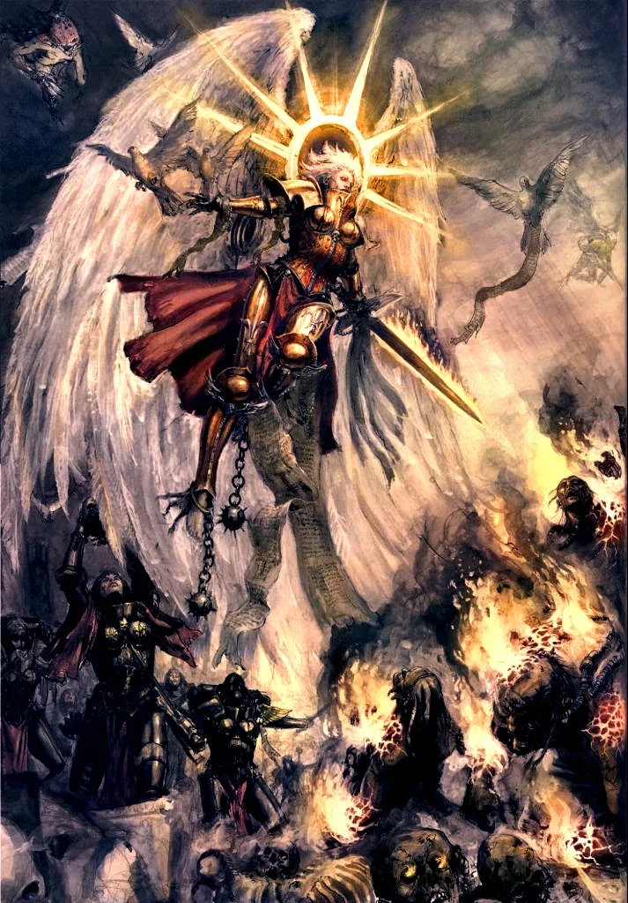
Sisters of Battle — นักรบหญิงผู้ศรัทธาต่อจักรพรรดิ ถือปืน bolter และเปลวไฟชำระบาป
02ต้นกำเนิด
เกิดจากเหตุการณ์ Age of Apostasy (สหัสวรรษที่ 36) เมื่อ Goge Vandire ผู้บ้าอำนาจครองทั้งตำแหน่งผู้นำศาสนจักรและระบบราชการ กฎหมาย 'Decree Passive' ห้ามศาสนจักรมี 'ทหารชาย' ศาสนจักรจึงใช้นักบวชหญิงถืออาวุธแทน ภายหลัง Alicia Dominica ผู้นำนักบวชหญิงเข้าเฝ้าจักรพรรดิแล้วประหาร Vandire
03เนื้อเรื่องเจาะลึก
Brides of the Emperor
ในยุคมืด Age of Apostasy ผู้นำศาสนจักร Goge Vandire ใช้กลุ่มหญิงนักรบ "Daughters of the Emperor" เป็นองครักษ์ เมื่อความจริงถูกเปิดเผย พวกเธอประหาร Vandire และหลังจากนั้นกฎ Decree Passive ห้ามศาสนจักรมี "ทหารชาย" — จึงเกิด Adepta Sororitas กองทัพหญิงของศาสนจักร
Orders Militant และ Non-Militant
Sisters แบ่งเป็น Order รบ (Militant) เช่น Order of Our Martyred Lady และ Order ที่ไม่ใช่ทหาร เช่น Hospitaller (แพทย์), Dialogus (นักภาษา), Famulous (นักการทูต) และ Sororitas ที่ดูแลห้องสมุดและโรงพยาบาลทั่วจักรวรรดิ
04นิสัยและวัฒนธรรม
- เชื่อในปาฏิหาริย์ของจักรพรรดิอย่างแรงกล้า
- แบ่งเป็น Order ต่าง ๆ เช่น Order of Our Martyred Lady, Order of the Valorous Heart
- ผูกพันกับ Ordo Hereticus แห่ง Inquisition
05จุดที่น่าสนใจ
- Living Saint: ผู้ที่ได้รับพลังจากจักรพรรดิกลับมาเกิดใหม่ เช่น Saint Celestine
- ใช้ปืนไฟและปืน melta จำนวนมาก
- Sisters Repentia: ผู้สำนึกบาปที่รบด้วยดาบเลื่อย
06ความสามารถพิเศษ
สิ่งที่ทำให้ Adepta Sororitas แตกต่างจากทัพอื่น — ทั้งพลังที่ติดตัวมาทั้งเผ่า/ทัพ และความสามารถของบุคคลสำคัญ
ของทั้งเผ่า/ทัพ
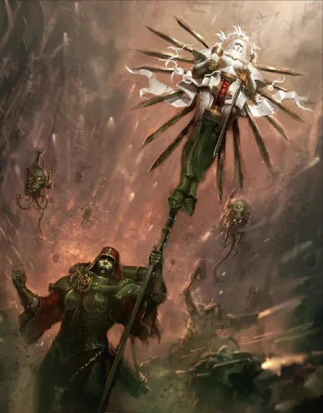
Acts of Faith — ปาฏิหาริย์จากศรัทธา
ความศรัทธาอันแรงกล้าของ Sisters ทำให้เกิดปาฏิหาริย์จริงในสนามรบ เช่น ฟื้นลุกขึ้นหลังบาดเจ็บ ยิงแม่นเกินธรรมชาติ หรือไม่ถูกทำร้ายด้วยไฟ จักรวรรดิเชื่อว่าเป็นพรจากจักรพรรดิ

นักบุญที่มีชีวิต
บางครั้งจักรพรรดิส่ง "Living Saint" ลงมา เช่น Saint Celestine ที่ตายแล้วฟื้นกลับมาซ้ำหลายครั้ง พร้อมผู้ติดตาม Geminae
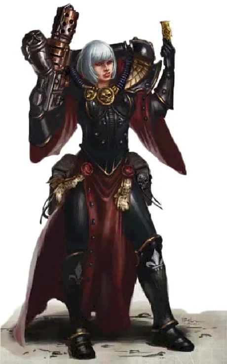
เกลียดแม่มดและคนนอกรีต
เป็นกองกำลังของ Ordo Hereticus ใช้ไฟเผาผู้นอกรีต พก Bolter และ Flamer ศักดิ์สิทธิ์ ทนต่อพลังจิตด้วยความศรัทธา
ของบุคคลสำคัญ
Saint Celestine
Living Saintนักบุญผู้ฟื้นจากความตายซ้ำแล้วซ้ำเล่า ต่อสู้ใน Cadia และช่วยฟื้นคืนชีพ Guilliman

Morvenn Vahl
Abbess Sanctorumผู้นำสูงสุดของ Sisters ขับชุดเกราะ Paragon Warsuit และนั่งในสภา High Lords
07หน่วยและบทบาทในกองทัพ
Adepta Sororitas (Sisters of Battle) คือกองทัพหญิงของศาสนาจักรวรรดิ นอกจากนักรบแล้วยังมี Order ที่ไม่ใช่ทหาร เช่น Hospitaller (หมอ) Dialogus (นักภาษา) และ Famulous (นักการทูต)
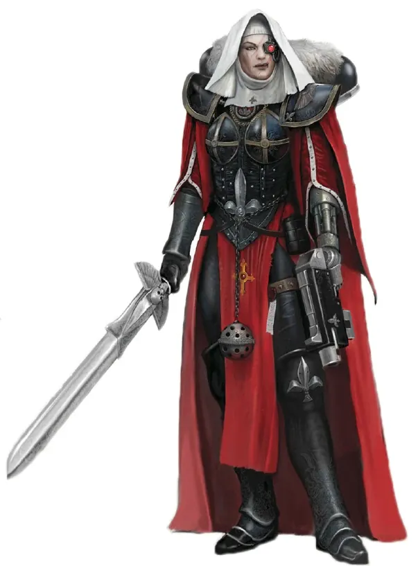
Canoness
แคนอเนสผู้นำ Order หรือกองกำลังของ Sisters มีประสบการณ์รบและศรัทธาสูงสุด ปัจจุบันผู้นำสูงสุดคือ Saint Celestine และ Morvenn Vahl (Abbess Sanctorum)
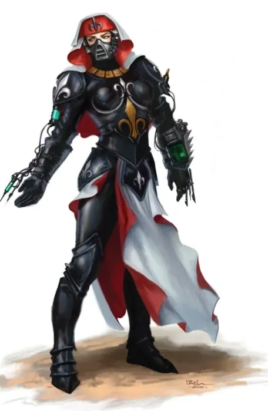
Hospitaller
ฮอสพิทัลเลอร์"หมอ" ของ Sisters จาก Orders Hospitaller ดูแลโรงพยาบาลทั่วจักรวรรดิ และติดตามทัพเพื่อรักษา Sister ที่บาดเจ็บด้วย Chirurgeon's Tools
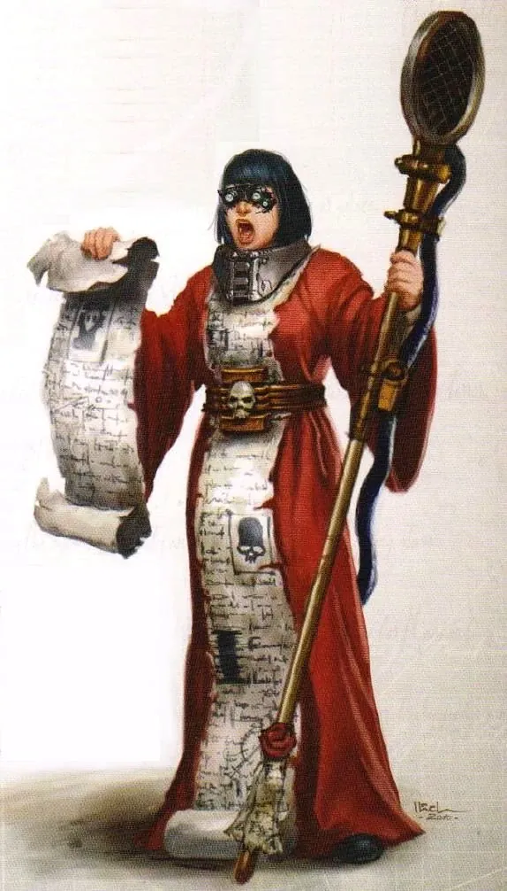
Dialogus
ไดอาโลกัสSister จาก Orders Dialogus ผู้เชี่ยวชาญภาษาและการสื่อสาร ใช้ลำโพงขยายเสียงสวดมนต์ปลุกใจกลางสนามรบ
Imagifier
อิมาจิฟายเออร์ผู้ถือรูปเคารพ Simulacrum Imperialis เล่าเรื่องการพลีชีพของนักบุญ ปลุกศรัทธาของพี่น้องรอบตัว
Battle Sisters
แบตเทิลซิสเตอร์นักรบหลัก สวมเกราะ Power Armour ถือ Bolter และ Flamer สวดมนต์ขณะรบ เชื่อว่าความศรัทธาคือพลัง
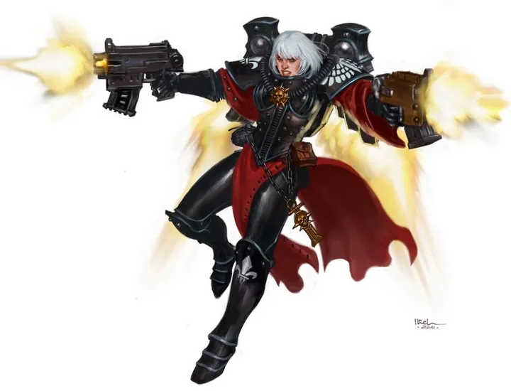
Seraphim / Zephyrim
เซราฟิม / เซฟิริมSister ที่ใช้ Jump Pack บินลงจากฟ้า — Seraphim ถือปืนพกสองมือ Zephyrim ถือดาบ Power Sword
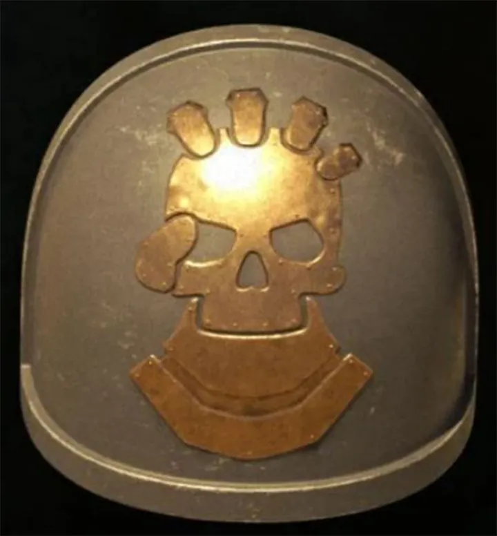
Retributors
รีทริบิวเตอร์หน่วยอาวุธหนักของ Sisters ใช้ Heavy Bolter และ Multi-melta ทำลายรถถัง
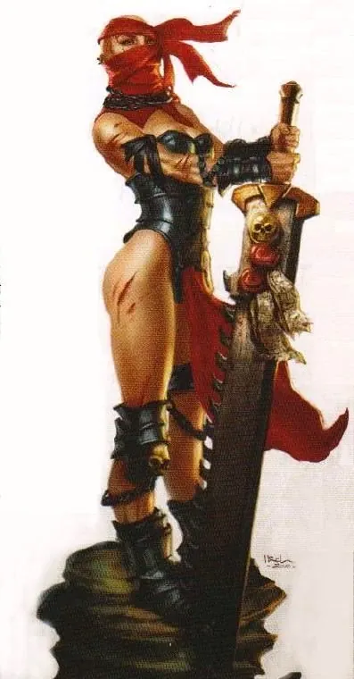
Sisters Repentia
ซิสเตอร์ รีเพนเทียSister ที่ทำผิดและต้องไถ่บาป ไม่สวมเกราะ ถือเลื่อยยนต์ Eviscerator วิ่งเข้าหาศัตรูเพื่อหาความตายอย่างมีเกียรติ นำโดย Mistress of Repentance
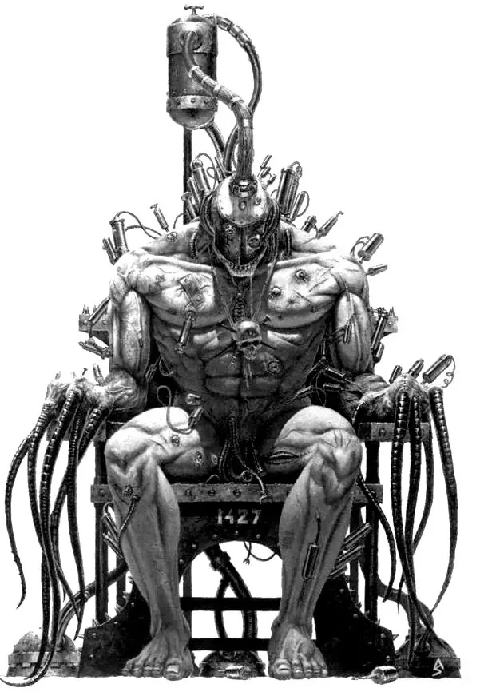
Arco-flagellant
อาร์โค-แฟลเจลแลนต์คนบาปที่ถูกผ่าตัดใส่อาวุธแส้ไฟฟ้าแทนแขน และถูกกระตุ้นด้วยยาให้คลั่ง ใช้เป็นอาวุธชีวิตของศาสนจักร
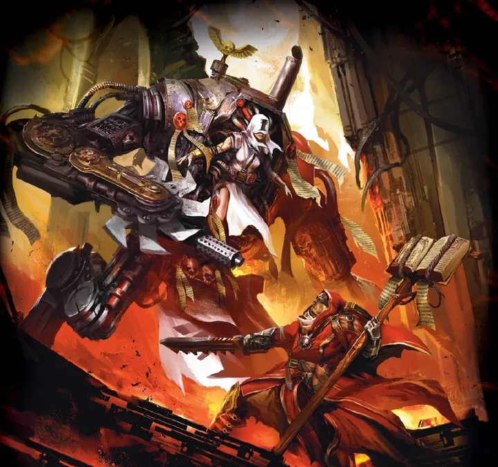
Penitent Engine
เพนิเทนต์ เอนจินคนบาปที่ถูกตรึงบนเครื่องจักรเดินได้พร้อมเลื่อยและไฟ วิ่งไปฆ่าจนกว่าจะตายเพื่อชดใช้บาป
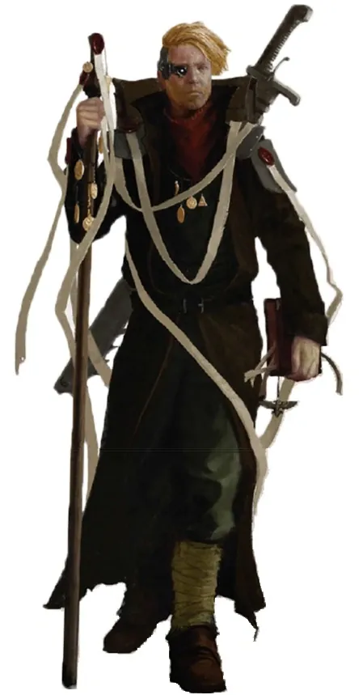
Missionary / Preacher
มิชชันนารีนักบวชของ Ecclesiarchy ที่ร่วมกองทัพ Sisters เผยแผ่ศาสนาและปลุกศรัทธาชาวบ้านให้ลุกขึ้นสู้
08วีรกรรมและเหตุการณ์สำคัญ
Age of Apostasy
ล้มล้าง Goge Vandire
Fall of Cadia
Saint Celestine ช่วยพาผู้รอดชีวิตหนี
09ตัวละครสำคัญ
Saint Celestine
Living Saintฟื้นคืนชีพทุกครั้งที่ตาย และปรากฏตัวในยามวิกฤต
10ยุค 40K — สหัสวรรษที่ 41
ยุค 40K Sisters of Battle เป็นกองกำลังชำระล้างผู้นอกรีต ปกป้องดาวศักดิ์สิทธิ์ และร่วมรบในครูเสดของจักรวรรดิ
11เนื้อเรื่องล่าสุด (Era Indomitus / M42)
ต่อสู้ปกป้อง Shrine World จำนวนมากที่ถูก Chaos บุกหลังการเกิด Great Rift
หลังการเกิด Great Rift ปฏิทินของจักรวรรดิคลาดเคลื่อน เหตุการณ์ยุคปัจจุบันจึงมักระบุเพียง 'M42' ไม่มีปีที่แน่นอน
12แกลเลอรี